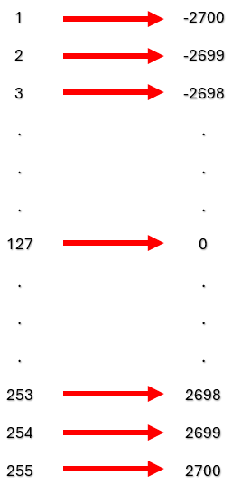

My Blog

PRC 103
11/07/2024
Robotica Creativa
Definir base física y virtualmente
Definir herramienta física y virtualmente
primer programa en KUKA | PRC
Descargo de responsabilidad:LAHV Design es un proyecto personal sin fines de lucro, todos los recursos (redactados y/o descargables) aquí compartidos son libres de uso, sin embargo, no me hago responsable de ninguna manera de las decisiones que terceros tomen con dicho recuso.
El primer programa que crearemos será solo para ejercitar un poco la teoría de GH y conocer mejor los componentes del plugin KUKA | PRC.
El objetivo de dicho programa será comprender como la base y el TCP afectan las coordenadas de rhino.
Obviamente lo primero será abrir un archivo nuevo de rhino y uno de GH.
Asumiré que ya descargaste la última versión del plugin desde la pagina oficial de robots in architecture
la pagina oficial de Robots in architectureuna vez realizada la instalación tendrás una pestaña de herramientas extra en la parte superior donde encontraras los componentes de este plugin.
Claro, que siempre podrás buscar los comandos haciendo doble clic y escribiendo el nombre del comando del plugin que necesites.
Lo primero que colocaremos será un componente de núcleo o “core”, este componente es el principal de nuestro proyecto por lo que siempre va primero.
Primero se muestra en color naranja para advertirnos que necesita información para poder trabajar, analicemos más a detalle esto.
La entrada “simulation slider” es una entrada opcional que sirve para analizar el movimiento del robot de forma manual. Aquí podremos observar si los ejes colisionan entre sí y en qué punto del código tendremos el error.
La entrada llamada “KUKA|PRC commands” es obligatoria y hace referencia a las instrucciones que el robot deberá seguir una a la vez en el orden en el que se le fue asignado.
La entrada llamada “tool” es opcional y corresponde a la definición que almacena la información del TCP dentro del CORE. Esto sirve para simular correctamente el código.
La entrada llamada “robot” es obligatoria y es precisamente el modelo exacto de robot para el cual estaremos generando el código, ya que diferentes modelos tienen diferentes Radios de alcance. Y eso afectara tanto nuestra simulación como la generación del código.
Y la entrada “Collision Geometry” es opcional y su objetivo es definir geometrías con las cuales el robo pueda colisionar. Una mesa de trabajo, otro robot, Etc.
El botón de la parte inferior “KUKA|PRC Settings” nos abre las configuraciones internas del plugin para poder manipular detalles como la posición de home, la velocidad de los motores, la resolución de la simulación, la licencia asociada a esa instalación del plugin.
Analizaremos mas a detalle la ventana de las configuraciones más adelante, sin embargo, creo que por el momento explicare ventana principal.
La ventana “settings” o configuraciones se compone de 5 secciones que son output, speed, Simulation, data y base.
En la sección llamada “output” podremos definir el directorio de nuestro sistema operativo, donde estaremos generando nuestro código. krl (kuka robot language) y así como poder cambiar el nombre de nuestro archivo, Es muy importante recordar que el nombre del archivo no puede tener espacios entre palabras ni caracteres especiales.
En la sección llamada “simulation” podemos configurar algunas opciones que tienen que ver con la reproducción de la simulación y que afectan el rendimiento del ordenador que está generando nuestro código.
En la sección “data” podemos revisar cuantos comandos estará ejecutando nuestro programa, así como el numero de la herramienta asociada al código y la versión de nuestro software, así como el vencimiento de la licencia.
En la sección “base” podemos definir la posición de la base que estará usando el robot como referencia para simular y generar correctamente el código, es sumamente importante colocar el numero de la base que tenemos configurada en el KSS (Kuka System Software) del sistema.
Regresemos al tema, en las entradas del componente principal vamos a usar el robot que usare para estos artículos, El cual se trata de un robot marca KUKA modelo KR120-R2700-2 con un control de robot KRC-4 como herramienta para este ejercicio estaré usando un actuador final genérico llamado “generic spindle” el cual me permite ver el TCP claramente en la punta de la herramienta.
Ahora para este ejercicio, construiremos 2 puntos de los cuales podamos manipular sus coordenadas X, Y y Z.
Esta es una definición que sirve para colocar un punto y mantener las coordenadas de este dentro de un rango de dimensiones para que el robot no entre tan seguido en posiciones inalcanzables ya que este robot tiene un rango de 2700 milímetros, pues eso es lo que use como base.
Esta es mi versión de un “multidimensional slider” en internet hay gente que lo ha intentado, está la leí en algún lado y me gusto porque está bastante siempre y en esta ocasión me va bien para explicar como funciona un dominio numérico en GH”.
- El selector de color en la configuración del sistema RGB funciona muy bien para este fin ya que usa un rango definido por el sistema de color que va del 0 al 255 que habla del porcentaje de saturación de estos color primario
- (2) Partir ARGB toma un color en la entrada y en la salida brinda sus parámetros por componente de color rojo azul o verde.
- (3) Un remapeo de dominio es un componente matemático que sirve hacer coincidir campos de datos de una fuente con campos de datos de otra fuente. 
- Es el rango de datos que escogí para esta definición ya que el robot tiene un alcance de 2700 mm de longitud, al estar la base posicionada en 0,0,0 pues entonces el rango de coordenadas dentro de este -2700 a 2700 también coincide con el alcance del robot.
- (5) Es una operación matemática que forma algo conocido como dominio o rango. Que se trata de un intervalo de numero que definen un espacio. En este caso son coordenadas en el eje X, Y y Z.
- (6) Toma las salidas de los remapeos de los colores (en los paneles) y los usa para construir un punto con esas coordenadas.
Ahora solo hay que duplicar esta definición para crear el segundo punto.
Si encendemos los últimos componentes de cada sección el viewport de rhino se vería asi.
El robot se muestra en una posición estática no importando a donde yo mueva los puntos, esto se debe a que aun no he vinculado esos puntos con comandos en el componente de “KUKA|CORE”. Por lo que el robot se queda estático en la posición de home sin importar si yo muevo el slider de simulación.
Primero creare un movimiento lineal entre el punto A y el B, primero debere crear planos xy en cada punto para poder colocarle el comando de KUKA | PRC
Ahora, sucedieron un par de cosa de la imagen anterior a esta, veamos. Primero en la salida de cada punto lo conecte aun comando de línea (solo necesita dos puntos), esto lo hice para ver de color rojo la trayectoria que recorre el robot en esta operación (solo de ayuda visual). Entonces inmediatamente coloque un componente de plano XY compartido para los dos puntos, el componente crea una lista sencilla con los datos de cada plano en el orden en el que los ingresé en el componente. A la salida del plano conecte el comando de kuka|prc “LINear Movement” y la salida de este ya la pude colocar en KUKA|CORE.
En este momento el slider ya funciona.
Conforme movemos el slider, podemos ver los movimientos de los ejes que el robot tendría que realizar para lograr alcanzar esas coordenadas, y podemos ver el avance te toda la trayectoria definido por la línea que camba de gris claro a gris oscuro.
 Movimiento PTP
Movimiento PTP
Ahora sustituiremos el componente encargado del movimiento lineal por un comando llamado PTP Movement en el que nos podremos dar cuenta de igual forma que la trayectoria cambia de color conforme vamos avanzando del slider.
Sin embargo, la línea roja que trazamos con anterioridad al compararlo con la trayectoria vemos que el robot no respeta esta trayectoria ya que lo que importa en el comando PTP es la velocidad de los motores en lugar de mantener la posición durante el trayecto.

Ahora veremos lo que sucede en la simulación si altero los planos de orientación.
Primero haremos mas grande el tamaño de los planos que ya tenemos para poder observar lo que sucede, como son planos XY estarán paralelos al plano XY original (la base del robot) y sus ejes serán paralelos entre sí.
ahora colocamos un componente para visualizar vectores en la salida de cada plano.
Veremos que las flechas están apuntando hacia arriba en Z ya que en este caso el eje Z es la dirección normal de ese plano.
Ahora que he colocado un comando llamado “flip plane” y volteado el Eje Z en uno de los puntos podemos ver como el vector mantiene su ubicación normal, sin embargo, invirtió su sentido y ahora está apuntando hacia abajo.

Entonces puedes ver como el TCP del robot intenta seguir el vector normal al plano xy que le invertimos el eje Z.
Que hubiera pasado si en lugar de planos XY hubiera ocupado otro de los componentes plano de la categoría de vector?.
Ahora podríamos observar que la dirección normal con respecto al plano sigue siendo la misma sin embargo cambia su orientación y sentido con respecto al origen de rhino (en la base del robot).
asi el sentido del movimiento del robot haria que la herramienta se incline
Y si hacemos flip en el eje Z de uno de los dos puntos pasan 2 cosas, se invierte el sentido de la flecha del vector correspondiente y nos aparece un error en el componente KUKA CORE ya que el robot entraria en colision en el eje 5.

Sin embargo el plugin sigue funcionando y nos permite simular el movimiento para ver hacia donde iria nuestro TCP.
Entonces lo que podemos ver que sucede es que el eje que siempre busca alinear corresponde al eje Z de la herramienta con la normal de cada plano que creemos en GH.
Hemos llegado al final de este artículo, como siempre espero que este recurso te haya sido de ayuda. Te recuerdo que te dejo en un archivo comprimido el archivo de rhino .3dm y el archivo de grashopper .gh para que puedas ver mejor lo que vimos en este artículo.
Aqui© Your Site Name. All Rights Reserved. Designed by HTML Codex